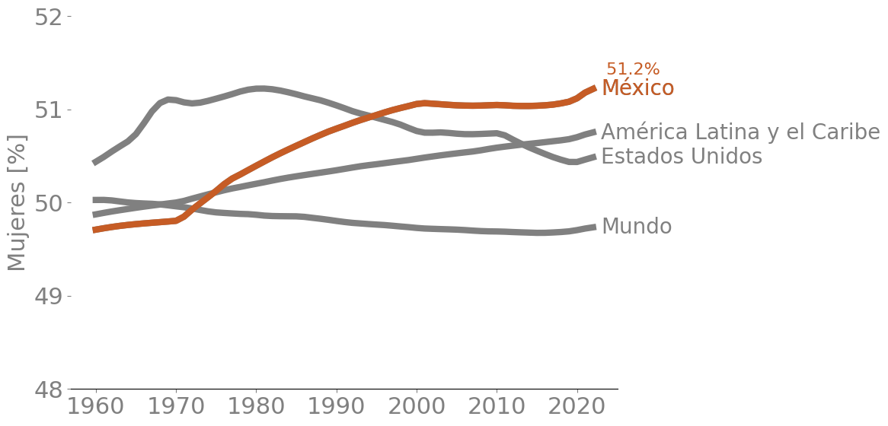
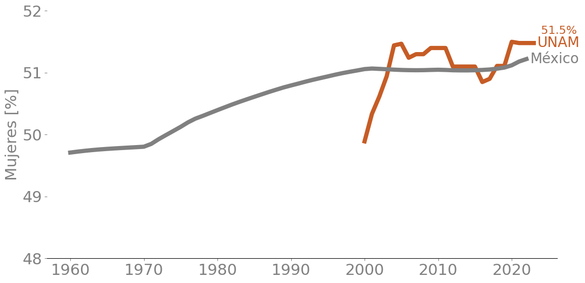
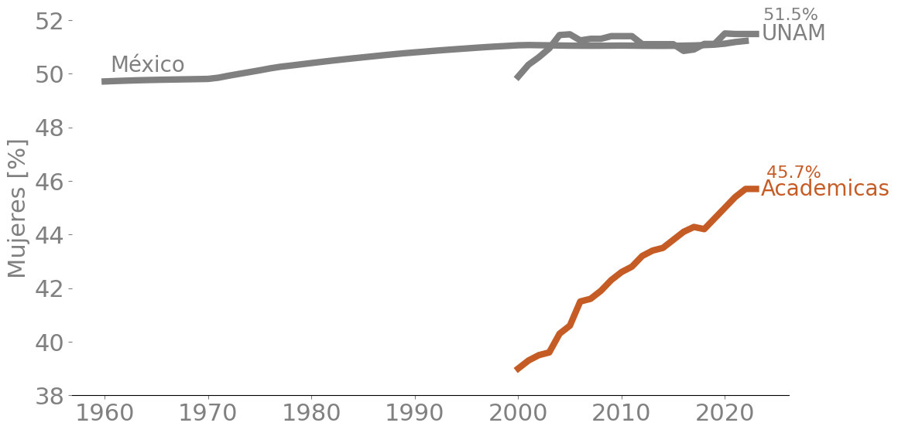
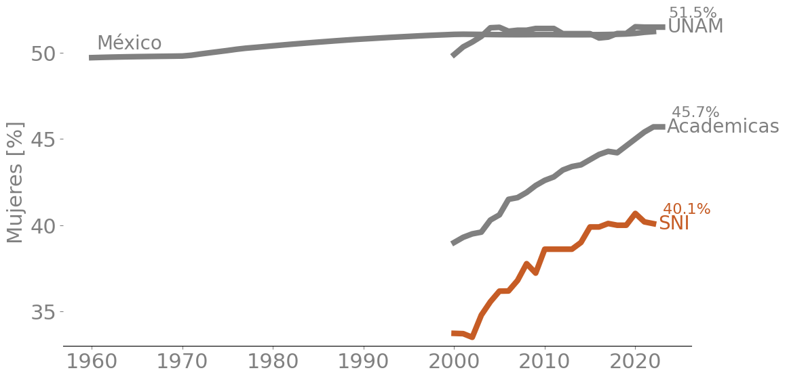
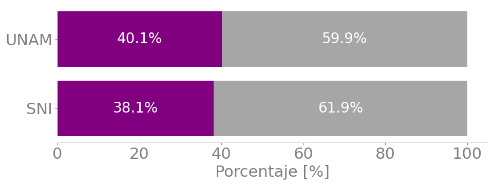
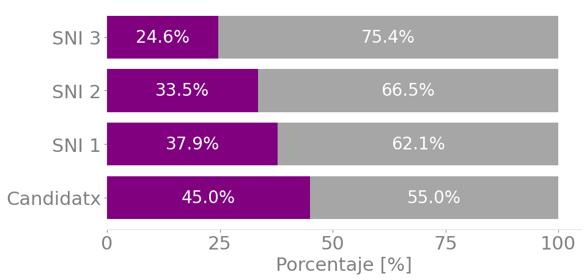

import pandas as pd
import matplotlib.pyplot as plt
from matplotlib.ticker import MultipleLocator, MaxNLocator
plt.style.use('estilo_enerdata.mplstyle')
# colores
azulier = "#1A3D6F"
doradoier = '#C65C25' Mujeres en el mundo y México
f = '../data/001_mujeres/API_SP.POP.TOTL.FE.ZS_DS2_es_excel_v2_6003288.xls'
data = pd.read_excel(f,sheet_name='Data',skiprows=3)
lista = ['WLD','MEX','USA','LCN']
data = data[data['Country Code'].isin(lista)]
data = data.drop(columns=['Country Code','Indicator Name','Indicator Code'])
# Utilizar melt() para transformar el DataFrame
mundo = data.melt(id_vars=['Country Name'], var_name='Year', value_name='Mujeres')
# Ahora pivotando para que 'Country Name' sea la columna y 'Year' sea el índice
mundo = mundo.pivot(index='Year',columns='Country Name',values='Mujeres')
mundo.index = mundo.index.astype(int)
paises = mundo.columns
fig, ax = plt.subplots()
for pais in paises:
ax.plot(mundo[pais])
ax.text(mundo[pais].index[-1] + 1,mundo[pais].iloc[-1], pais, ha='left', va='center')
ax.plot(mundo['México'],color=doradoier)
ax.text(mundo['México'].index[-1] + 1,mundo['México'].iloc[-1],
'México',
ha='left',
va='center',
color=doradoier)
ax.text(mundo['México'].index[-1] + 1,mundo['México'].iloc[-1]+.2,
str(mundo['México'].iloc[-1].round(1)).join(" %"),
ha='left',
va='center',
color=doradoier,fontsize=16)
ax.set_ylim(48,52)
ax.set_ylabel('Mujeres [%]')
ax.xaxis.set_major_locator( MultipleLocator(10))
ax.yaxis.set_major_locator(MaxNLocator(integer=True))
fig.tight_layout()
fig.savefig('images/mujeres.png')
mundo['México'].iloc[-1]51.221222058502f = '../data/001_mujeres/c03 pobesc total.xls'
data = pd.read_excel(f,skiprows=5,nrows=2)
# print(data)
# Derretir el DataFrame para tener los años como filas
data_melted = data.melt(id_vars=['Unnamed: 0'], var_name='Year', value_name='Value')
# Pivotear para obtener el porcentaje de mujeres como columnas
unam = data_melted.pivot(index='Year', columns='Unnamed: 0', values='Value')
# Limpiar los nombres de las figuras para que solo muestren el último año (últimos 4 caracteres)
unam = unam.rename(index=lambda x: x.split('-')[-1])
del unam['Población escolar total']
unam.index = unam.index.astype(int)
unam = unam*100
unam['% mujeres']Year
2000 49.891077
2001 50.335280
2002 50.614575
2003 50.941182
2004 51.442542
2005 51.468533
2006 51.242303
2007 51.300000
2008 51.300000
2009 51.400000
2010 51.400000
2011 51.400000
2012 51.100000
2013 51.100000
2014 51.100000
2015 51.100000
2016 50.850000
2017 50.901616
2018 51.110000
2019 51.110000
2020 51.500000
2021 51.480000
2022 51.480000
2023 51.480000
Name: % mujeres, dtype: float64fig, ax = plt.subplots()
ax.plot(unam,color=doradoier)
ax.text(unam.index[-1] + .5 ,unam['% mujeres'].iloc[-1], 'UNAM', ha='left', va='center',color=doradoier)
ax.text(unam.index[-1] + .5 ,unam['% mujeres'].iloc[-1]+.2,
str(unam['% mujeres'].iloc[-1].round(1)).join(" %"),
ha='left',
va='center',color=doradoier,
fontsize=16)
ax.plot(mundo['México'])
ax.text(mundo.index[-1] + .5 ,mundo['México'].iloc[-1],
'México', ha='left', va='center')
ax.set_ylim(48,52)
ax.set_ylabel('Mujeres [%]')
ax.xaxis.set_major_locator( MultipleLocator(10))
ax.yaxis.set_major_locator(MaxNLocator(integer=True))
fig.tight_layout()
fig.savefig('images/unam.png')
f = '../data/001_mujeres/c16 persaca.xls'
data = pd.read_excel(f, skiprows=5,nrows=2)
data_melted = data.melt(id_vars=['Unnamed: 0'], var_name='Year', value_name='Porcentaje')
acad = data_melted.pivot(index='Year', columns='Unnamed: 0', values='Porcentaje')
del acad["Personas"]
acad.index = acad.index.astype(int)
acad = acad*100
# acad
fig, ax = plt.subplots()
ax.plot(unam)
ax.text(unam.index[-1] + .5 ,unam['% mujeres'].iloc[-1],
'UNAM', ha='left', va='center')
ax.text(unam.index[-1] + .2 ,unam['% mujeres'].iloc[-1]+.7,
str(unam['% mujeres'].iloc[-1].round(1)).join(" %"),
ha='left', va='center',fontsize=16)
ax.plot(mundo['México'])
ax.text(mundo.index[0] + .5,mundo['México'].iloc[0] + .6, 'México', ha='left', va='center')
ax.plot(acad,color=doradoier)
ax.text(acad.index[-1] + .5 ,acad['% mujeres '].iloc[-1],
'Academicas',
ha='left',
va='center',
color=doradoier)
ax.text(acad.index[-1] + .5 ,acad['% mujeres '].iloc[-1]+.6,
str(acad['% mujeres '].iloc[-1].round(1)).join(" %"),
ha='left',
va='center',
color=doradoier,fontsize=16)
ax.set_ylim(38,52)
ax.set_ylabel('Mujeres [%]')
ax.xaxis.set_major_locator( MultipleLocator(10))
ax.yaxis.set_major_locator(MaxNLocator(integer=True))
fig.tight_layout()
fig.savefig('images/acad.png')
f = '../data/001_mujeres/c25 sni.xls'
data = pd.read_excel(f, skiprows=5,nrows=2)
data_melted = data.melt(id_vars=['Unnamed: 0'], var_name='Year', value_name='Porcentaje')
sniunam = data_melted.pivot(index='Year', columns='Unnamed: 0', values='Porcentaje')
del sniunam["Total de investigadores en el SNI"]
sniunam.index = sniunam.index.astype(int)
sniunam = sniunam*100
# sni
fig, ax = plt.subplots()
ax.plot(unam)
ax.text(unam.index[-1] + .5 ,unam['% mujeres'].iloc[-1],
'UNAM', ha='left', va='center')
ax.text(unam.index[-1] + .2 ,unam['% mujeres'].iloc[-1]+.8,
str(unam['% mujeres'].iloc[-1].round(1)).join(" %"),
ha='left',
va='center',
fontsize=16)
ax.plot(mundo['México'])
ax.text(mundo.index[0] + .5,mundo['México'].iloc[0] + .8,
'México', ha='left', va='center')
ax.plot(acad)
ax.text(acad.index[-1] + .5 ,acad['% mujeres '].iloc[-1],
'Academicas',
ha='left',
va='center')
ax.text(acad.index[-1] + .5 ,acad['% mujeres '].iloc[-1]+.8,
str(acad['% mujeres '].iloc[-1].round(1)).join(" %"),
ha='left',
va='center',
fontsize=16)
ax.plot(sniunam,color=doradoier)
ax.text(sniunam.index[-1] + .5 ,sniunam['% mujeres'].iloc[-1],
'SNI',
ha='left',
va='center',
color=doradoier)
ax.text(sniunam.index[-1] + .5 ,sniunam['% mujeres'].iloc[-1]+.8,
str(sniunam['% mujeres'].iloc[-1].round(1)).join(" %"),
ha='left',
va='center',
color=doradoier,fontsize=16)
ax.set_ylim(33,52)
ax.set_ylabel('Mujeres [%]')
ax.xaxis.set_major_locator( MultipleLocator(10))
ax.yaxis.set_major_locator(MaxNLocator(integer=True))
ax.yaxis.set_major_locator( MultipleLocator(5))
fig.tight_layout()
fig.savefig('images/sni_unam.png')
f = "../data/001_mujeres/Padron_de_Beneficiarios_2021.xlsx"
sni = pd.read_excel(f,usecols=[1,3,4,8])
sni = sni[sni["NOBILIS"].isin(["DRA.","DR."])]
sni['genero'] = sni['NOBILIS'].map({'DR.': 'M', 'DRA.': 'F'})
# Análisis descriptivo de la distribución de género en el conjunto de datos
# Conteo general de género
genero_counts = sni['genero'].value_counts()
# Suponiendo que 'df' es el DataFrame que contiene los datos
total = genero_counts.sum() # Esto calcula el número total de entradas
porcentajes = (genero_counts / total) * 100 # Esto calcula el porcentaje para cada género
# Porcentaje general de género
genero_percentage = sni['genero'].value_counts(normalize=True) * 100
# Distribución de género por Categoría
genero_por_categoria = sni.groupby(['CATEGORÍA', 'genero']).size().unstack()
# Distribución de género por Área del Conocimiento
genero_por_area = sni.groupby(['ÁREA DEL CONOCIMIENTO', 'genero']).size().unstack()
genero_counts, genero_percentage, genero_por_categoria, genero_por_area(genero
M 21145
F 13017
Name: count, dtype: int64,
genero
M 61.896259
F 38.103741
Name: proportion, dtype: float64,
genero F M
CATEGORÍA
1 6721 11033
2 1608 3199
3 641 1965
C 4047 4948,
genero F M
ÁREA DEL CONOCIMIENTO
I.- FÍSICO-MATEMÁTICAS Y CIENCIAS DE LA TIERRA 1174 3949
II.- BIOLOGÍA Y QUÍMICA 2275 2926
III.- MEDICINA Y CIENCIAS DE LA SALUD 1620 1488
IV.- HUMANIDADES Y CIENCIAS DE LA CONDUCTA 2509 2519
V.- CIENCIAS SOCIALES 2500 3419
VI.- BIOTECNOLOGÍA Y CIENCIAS AGROPECUARIAS 1802 3032
VII.- INGENIERÍAS 1137 3812)# Intentaremos generar la gráfica nuevamente con los valores porcentuales correctos
# Crear la gráfica de barras horizontales apiladas con la corrección
fig, ax = plt.subplots(figsize=(10, 4)) # Ajustamos la altura para acomodar la nueva barra
# Dibujar las barras existentes para el SNI
ax.barh("SNI", porcentajes['F'], color='purple', label='Mujeres en SNI')
ax.barh("SNI", porcentajes['M'], left=porcentajes['F'],label='Hombres en SNI', alpha=0.7)
# Dibujar las barras para la UNAM
porcentaje_mujeres_unam = 40.1
porcentaje_hombres_unam = 100 - porcentaje_mujeres_unam
ax.barh("UNAM", porcentaje_mujeres_unam, color='purple', label='Mujeres en UNAM',)
ax.barh("UNAM", porcentaje_hombres_unam, left=porcentaje_mujeres_unam,
label='Hombres en UNAM', alpha=0.7)
ax.set_xlabel('Porcentaje [%]')
# Mostrar los valores de los porcentajes en las barras
ax.text(porcentajes['F']/2, 0, f"{porcentajes['F']:.1f}%", va='center', ha='center', color='white')
ax.text(porcentajes['F'] + porcentajes['M']/2, 0, f"{porcentajes['M']:.1f}%", va='center', ha='center', color='white')
ax.text(porcentaje_mujeres_unam/2, 1, f"{porcentaje_mujeres_unam:.1f}%", va='center', ha='center', color='white')
ax.text(porcentaje_mujeres_unam + porcentaje_hombres_unam/2, 1, f"{porcentaje_hombres_unam:.1f}%", va='center', ha='center', color='white')
# Ajustes de estilo
ax.spines['bottom'].set_color('#DDDDDD')
# Mostrar la gráfica
plt.tight_layout() # Ajusta la disposición para que todo quepa sin superponerse
fig.savefig('images/sni.png')
# Corregimos el mapeo de categorías usando los valores disponibles
categoria_map_correcto = {
1: 'SNI 1',
2: 'SNI 2',
3: 'SNI 3',
'C': 'Candidatx'
}
# Aplicamos el mapeo correcto
sni['CATEGORÍA_MAPEADA'] = sni['CATEGORÍA'].replace(categoria_map_correcto)
# Calculamos los conteos y porcentajes por categoría
categoria_porcentajes = sni.groupby(['CATEGORÍA_MAPEADA', 'genero']).size().unstack().apply(lambda x: x / x.sum() * 100, axis=1)
# Aseguramos el orden de las categorías para el gráfico
categoria_porcentajes = categoria_porcentajes.reindex(['Candidatx', 'SNI 1', 'SNI 2', 'SNI 3'])
# Crear la gráfica de barras horizontales apiladas con los colores y título normal
fig, ax = plt.subplots(figsize=(10, 5))
# # Dibujar las barras por categoría
# for categoria in categoria_porcentajes.index:
# ax.barh(categoria, categoria_porcentajes.loc[categoria, 'F'], color='purple')
# ax.barh(categoria, categoria_porcentajes.loc[categoria, 'M'], left=categoria_porcentajes.loc[categoria, 'F'], color='skyblue')
# Dibujar las barras por categoría y agregar los valores dentro de las barras
for categoria in categoria_porcentajes.index:
mujeres_value = categoria_porcentajes.loc[categoria, 'F']
hombres_value = categoria_porcentajes.loc[categoria, 'M']
ax.barh(categoria, mujeres_value, color='purple')
ax.barh(categoria, hombres_value, left=mujeres_value, alpha=0.7)
ax.text(mujeres_value/2, categoria, f"{mujeres_value:.1f}%", va='center', ha='center', color='white')
ax.text(mujeres_value + hombres_value/2, categoria, f"{hombres_value:.1f}%", va='center', ha='center', color='white')
ax.set_xlabel('Porcentaje [%]')
ax.set_xticks(range(0, 101, 25)) # Establece las marcas del eje x de 0 a 100, de 25 en 25
# Ajustes de estilo
ax.spines['bottom'].set_color('#DDDDDD')
# Ajustar la disposición
plt.tight_layout()
fig.savefig('images/sni_niveles.png')